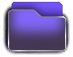

Suelta aquí tus dos archivos
o haz clic para buscarlos, o pega una imagen con Ctrl+V
Generando vista previa...

Suelta aquí tus dos archivos
o haz clic para buscarlos, o pega una imagen con Ctrl+V
HYRO STUDIO
Suelta o pega tu imagen
Incluir
Qué guardar